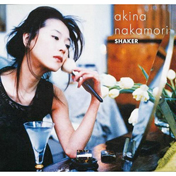

录音室专辑：第17张
发行年份：1997年
发行日期：3月21日
| 歌名 | 作词 | 作曲 | 编曲 |
|---|---|---|---|
| 満月 | 三枝翔 | 山口一久 | 山口一久、角和洋 |
| Spicy Heart | 真間稜 | 宇野俊秀 | 奈良部匠平 |
| 夜の匂い | 岡部真理子 | 朝本浩文 | 朝本浩文 |
| おいしい水 | 岡部真理子 | 朝本浩文 | 朝本浩文 |
| MOONLIGHT SHADOW-月に吠えろ (专辑混音) | 高見沢俊彦 | 小室哲哉 | 小室哲哉 |
| 赤い薔薇が揺れた | 夏野芹子 | 渡辺未来 | 玉置伸吾 |
| APPETITE 〜HORROR PLANTS BENJAMIN | 夏野芹子 | U-ki | U-ki |
| 夢みるように眠りたい | 岡部真理子 | 千沢仁 | 迫田到 |
| 桜 | 夏野芹子 | U-ki | U-ki |
| 風を抱き締めて | まつざきゆうこ | 島田昌典 | 島田昌典 |
| 月は青く | 岡部真理子 | 野田敏一 | 玉置伸吾 |
2002年12月4日UNIVERSAL J重发版 SHAKER+3 增加：
| 歌名 |
|---|
| MOONLIGHT SHADOW-月に吠えろ |
| APPETITE |
| SWEET SUSPICION |
首发规格：CD: MVCD-38
唱片公司：MCA Victor
排行榜：Oricon公信榜专辑周榜第14位
再发行：
2002年12月4日 - CD: UMCK-1153
2005年7月1日 - 数码下载
2017年5月3日 - UHQCD: UPCH-7271